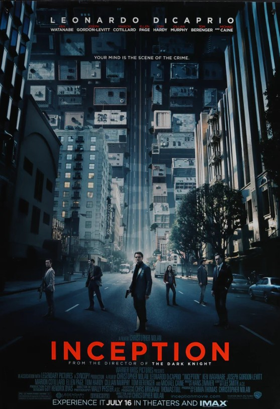

Yönetmen: Christopher Nolan
Oyuncular: Leonardo DiCaprio, Joseph Gordon-Levitt, Ellen Page, Tom Hardy
Konu
İnsanların rüyalarına girerek bilinçaltına fikir yerleştirme görevini üstlenen bir hırsızın hikayesi. Gerçeklik ile rüya arasındaki çizgi yavaşça silinir.
🎥 Fragman
🎵 Soundtrack
Hans Zimmer tarafından bestelenmiştir. Özellikle "Time" parçası oldukça etkilidir.